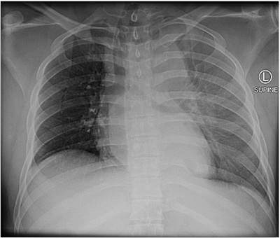

Questão 1 · Convulsão · 4000185353Mulher, 20 anos de idade, dá entrada na Unidade de Pronto Atendimento duas horas após episódio de crise tônico-clônica generalizada. Refere ser o segundo episódio, tendo o primeiro ocorrido há dois meses. Nega comorbidades, trauma, uso de álcool, tabaco ou drogas ilícitas. Faz uso apenas de contraceptivo oral. Ao exame, apresenta-se em bom estado geral, sinais vitais estáveis. Exame segmentar e neurológico sem achados. Realizada tomogra a computadorizada de crânio sem alterações. Diante do caso clínico, com relação ao diagnóstico mais provável, pode-se afirmar:
A Durante ou após uma crise, pode ocorrer morte súbita inesperada decorrente de apneia ou arritmia.
B As crises sempre ocorrem após um fator desencadeante, como a estimulação luminosa intermitente.
C Apesar de haver interferência na qualidade de vida a mortalidade é equiparável à da população geral.
D As crises geralmente deixam sequelas neurológicas, levando a déficit cognitivo.
Questão 2 · Convulsão · 4000185352Mulher, 20 anos de idade, dá entrada na Unidade de Pronto Atendimento duas horas após episódio de crise tônico-clônica generalizada. Refere ser o segundo episódio, tendo o primeiro ocorrido há dois meses. Nega comorbidades, trauma, uso de álcool, tabaco ou drogas ilícitas. Faz uso apenas de contraceptivo oral. Ao exame, apresenta-se em bom estado geral, sinais vitais estáveis. Exame segmentar e neurológico sem achados. Realizada tomogra a computadorizada de crânio sem alterações. Com base no quadro descrito, indique o exame complementar mais adequado neste momento:
A Ressonância nuclear magnética de crânio.
B Eletroencefalograma.
C Angiotomografia computadorizada de crânio.
D Exame de líquor.
Questão 3 · Convulsão · 4000185351Mulher, 20 anos de idade, dá entrada na Unidade de Pronto Atendimento duas horas após episódio de crise tônico-clônica generalizada. Refere ser o segundo episódio, tendo o primeiro ocorrido há dois meses. Nega comorbidades, trauma, uso de álcool, tabaco ou drogas ilícitas. Faz uso apenas de contraceptivo oral. Ao exame, apresenta-se em bom estado geral, sinais vitais estáveis. Exame segmentar e neurológico sem achados. Realizada tomogra a computadorizada de crânio sem alterações. Indique a melhor conduta terapêutica a ser realizada, neste momento, na paciente:
A Aguardar a realização do exame complementar para prescrição de fármaco.
B Expectante, sendo prescindível o início de medicação anticonvulsivante.
C Prescrever diazepam 10mg, via intravenosa, como primeira escolha medicamentosa.
D Iniciar anticonvulsivante, considerando o uso do contraceptivo oral na escolha do fármaco.
Questão 4 · Arterite de Células Gigantes · Manif estações clínicas · 4000185350Mulher, 70 anos de idade, procura atendimento clínico por quadro de cefaleia intensa em região temporal, há 4 meses. Queixa-se ainda de fadiga importante, perda da acuidade visual e perda ponderal não aferida. Ao exame, apresentase em regular estado geral, emagrecida, subfebril; demais sinais vitais estáveis. Apresenta alodínia em região de couro cabeludo e claudicação de mandíbula. Considerando o caso clínico descrito, indique o diagnóstico mais provável para o paciente:
A Neuromielite óptica.
B Arterite de células gigantes
C Cefaleia em salvas.
D Nevralgia do nervo trigêmeo.
Questão 5 · Diagnóstico · 4000185349Mulher, 70 anos de idade, procura atendimento clínico por quadro de cefaleia intensa em região temporal, há 4 meses. Queixa-se ainda de fadiga importante, perda da acuidade visual e perda ponderal não aferida. Ao exame, apresentase em regular estado geral, emagrecida, subfebril; demais sinais vitais estáveis. Apresenta alodínia em região de couro cabeludo e claudicação de mandíbula. Indique o exame padrão-ouro para o diagnóstico mais provável:
A Ressonância magnética de crânio.
B Tomografia computadorizada de crânio.
C Biópsia da artéria temporal.
D Eletroencefalograma.
Questão 6 · Tratamento · 4000185348Mulher, 70 anos de idade, procura atendimento clínico por quadro de cefaleia intensa em região temporal, há 4 meses. Queixa-se ainda de fadiga importante, perda da acuidade visual e perda ponderal não aferida. Ao exame, apresentase em regular estado geral, emagrecida, subfebril; demais sinais vitais estáveis. Apresenta alodínia em região de couro cabeludo e claudicação de mandíbula. Frente ao caso, indique a opção terapêutica mais adequada:
A Tramadol e oxigenioterapia.
B Analgésico comum e escalonar para opioides, conforme resposta.
C Carbamazepina, oxcarbamazepina ou gabapentina.
D Corticoterapia, imunossupressores e/ou imunobiológicos.
Questão 7 · Animais peçonhentos · 4000185347Mulher, 24 anos de idade, é atendida na Unidade de Pronto Atendimento 20 minutos após acidente na praia com um animal hidrozoário conhecido como caravela-portuguesa ( lineares em região posterior do tórax. Diante do caso e considerando as orientações do Ministério da Saúde, Indique a substância mais adequada a ser usada sobre a área afetada, ainda no local do acidente:
A Água mineral.
B Urina.
C Água de coco.
D Água do mar.
Questão 8 · Animais peçonhentos · 4000185346Mulher, 24 anos de idade, é atendida na Unidade de Pronto Atendimento 20 minutos após acidente na praia com um animal hidrozoário conhecido como caravela-portuguesa ( lineares em região posterior do tórax. Diante do caso e considerando as orientações do Ministério da Saúde, Identifique complicações que mais comumente se associam ao acidente com o animal peçonhento envolvido no caso:
A Convulsões e hemólise.
B Paraplegia e diarreia.
C Arritmia e anafilaxia.
D Necrose e insuficiência renal aguda.
Questão 9 · Animais peçonhentos · 4000185345Mulher, 24 anos de idade, é atendida na Unidade de Pronto Atendimento 20 minutos após acidente na praia com um animal hidrozoário conhecido como caravela-portuguesa ( lineares em região posterior do tórax. Diante do caso e considerando as orientações do Ministério da Saúde, Indique a conduta mais adequada, neste momento:
A Usar ácido acético a 5% tópico.
B Aplicar soro heterólogo intravenoso.
C Aplicar sulfadiazina de prata tópica.
D Aplicar glicerina líquida tópica.
Questão 10 · Agentes etiológicos · 4000185344Homem, 81 anos de idade, internado em enfermaria de hospital secundário por quadro de pneumonia, em uso de ceftriaxona. No 5º dia de internação, evoluiu com delirium hipoativo, hipotensão e febre. Foi realizado novo rastreio infeccioso, sendo diagnosticada infecção do trato urinário. A urocultura foi entregue ao médico com um problema de impressão, mas era possível ler “ESBL positivo”. Considerando o caso clínico descrito, indique, entre as bactérias citadas a que, mais provavelmente, cresceu na urocultura:
A Staphylococcus aureus.
B Proteus mirabilis.
C Klebsiella pneumoniae.
D Enterococcus sp
Questão 11 · Agentes etiológicos · 4000185343Homem, 81 anos de idade, internado em enfermaria de hospital secundário por quadro de pneumonia, em uso de ceftriaxona. No 5º dia de internação, evoluiu com delirium hipoativo, hipotensão e febre. Foi realizado novo rastreio infeccioso, sendo diagnosticada infecção do trato urinário. A urocultura foi entregue ao médico com um problema de impressão, mas era possível ler “ESBL positivo”. Identifique o significado de ESBL
A Enterobactéria produtora de betalactamase.
B Betalactamase de espectro estendido.
C Enterobactéria sensível à betalactamase.
D Betalactamase de baixo espectro.
Questão 12 · Cistite · 4000185342Homem, 81 anos de idade, internado em enfermaria de hospital secundário por quadro de pneumonia, em uso de ceftriaxona. No 5º dia de internação, evoluiu com delirium hipoativo, hipotensão e febre. Foi realizado novo rastreio infeccioso, sendo diagnosticada infecção do trato urinário. A urocultura foi entregue ao médico com um problema de impressão, mas era possível ler “ESBL positivo”. Indique à conduta mais adequada em relação à antibioticoterapia, neste momento:
A Manter apenas ceftriaxona.
B Associar vancomicina à ceftriaxona.
C Escalonar para piperacilina-tazobactam.
D Escalonar para meropenem.
Questão 13 · Laceração Aórtica · Trauma Torácico · 4000185341Paciente, sexo masculino, 20 anos de idade, é trazido por populares, após ser vítima de trauma moto x anteparo, em via expressa, há 45 minutos. Dá entrada no Pronto-Socorro com rebaixamento do nível de consciência. Ao exame, A: via aérea pérvia, colocado colar cervical, SatO₂:92%; B: murmúrios vesiculares bem distribuídos com diminuição em base esquerda, FR: 22ipm; C: bulhas rítmicas e normofonéticas, FC:112bpm, PA: 86x54mmHg, pulsos radiais assimétricos, abdome indolor à palpação, pelve estável e toque retal sem alterações; D: escala de coma de Glasgow: 7, pupilas isocóricas e fotorreagentes; E: escoriações e dor à palpação em hemitórax esquerdo. Foi realizado radiografia de tórax na sala de emergência. De acordo com o caso e com o exame da imagem, indique a principal suspeita diagnóstica que justifique o quadro clínico.

A Hemotórax.
B Pneumotórax.
C Tamponamento cardíaco.
D Ruptura de aorta.
Questão 14 · Pneumotórax Hipertensivo · 4000185340Paciente, sexo masculino, 20 anos de idade, é trazido por populares, após ser vítima de trauma moto x anteparo, em via expressa, há 45 minutos. Dá entrada no Pronto-Socorro com rebaixamento do nível de consciência. Ao exame, A: via aérea pérvia, colocado colar cervical, SatO₂:92%; B: murmúrios vesiculares bem distribuídos com diminuição em base esquerda, FR: 22ipm; C: bulhas rítmicas e normofonéticas, FC:112bpm, PA: 86x54mmHg, pulsos radiais assimétricos, abdome indolor à palpação, pelve estável e toque retal sem alterações; D: escala de coma de Glasgow: 7, pupilas isocóricas e fotorreagentes; E: escoriações e dor à palpação em hemitórax esquerdo. Foi realizado radiografia de tórax na sala de emergência. Diante do caso, indique a primeira conduta que deve ser instituída no Pronto-Socorro:

A Toracostomia com drenagem em selo d’água.
B Pericardiocentese de alívio.
C Intubação orotraqueal com ventilação mecânica assistida.
D Transfusão de duas unidades de concentrado de hemácias.
Questão 15 · Laceração Aórtica · 4000185339Paciente, sexo masculino, 20 anos de idade, é trazido por populares, após ser vítima de trauma moto x anteparo, em via expressa, há 45 minutos. Dá entrada no Pronto-Socorro com rebaixamento do nível de consciência. Ao exame, A: via aérea pérvia, colocado colar cervical, SatO₂:92%; B: murmúrios vesiculares bem distribuídos com diminuição em base esquerda, FR: 22ipm; C: bulhas rítmicas e normofonéticas, FC:112bpm, PA: 86x54mmHg, pulsos radiais assimétricos, abdome indolor à palpação, pelve estável e toque retal sem alterações; D: escala de coma de Glasgow: 7, pupilas isocóricas e fotorreagentes; E: escoriações e dor à palpação em hemitórax esquerdo. Foi realizado radiografia de tórax na sala de emergência. Indique o exame padrão-ouro para confirmação diagnóstica do trauma apresentado pelo paciente:

A Tomografia computadorizada de tórax com contraste.
B Aortografia.
C Ecocardiografia transtorácica.
D Broncoscopia.
Questão 16 · Trauma de Face · 4000185338Paciente, sexo masculino, 22 anos de idade, trazido por populares à UPA após ser vítima de agressão física, relata que sofreu agressão com um soco na face há cerca de 45 minutos. Refere ferimento em pálpebra superior direita com dor e sangramento. Nega outros sintomas. Ao exame físico, bom estado geral, lúcido e orientado, presença de ferimento corto- contuso na pálpebra superior direita, medindo 2,0cm, com exposição da camada interna, sangramento ativo em pequena quantidade e sem lesão do globo ocular direito. Frente ao quadro descrito, indique a estrutura anatômica lesada, caso o paciente apresente ptose palpebral.
A Músculo orbicular dos olhos.
B Músculo reto superior.
C Aponeurose do músculo levantador da pálpebra superior.
D Músculo de Müller.
Questão 17 · Trauma de Face · 4000185337Paciente, sexo masculino, 22 anos de idade, trazido por populares à UPA após ser vítima de agressão física, relata que sofreu agressão com um soco na face há cerca de 45 minutos. Refere ferimento em pálpebra superior direita com dor e sangramento. Nega outros sintomas. Ao exame físico, bom estado geral, lúcido e orientado, presença de ferimento corto- contuso na pálpebra superior direita, medindo 2,0cm, com exposição da camada interna, sangramento ativo em pequena quantidade e sem lesão do globo ocular direito. Caso o paciente apresente perda de substância que impossibilite a síntese primária, identi que a técnica para a reconstrução da pálpebra:
A Enxerto de pele da pálpebra contralateral.
B Retalho cutâneo de sobrancelha.
C Retalho cutâneo da pálpebra inferior.
D Enxerto de mucosa.
Questão 18 · Trauma de Face · 4000185336Paciente, sexo masculino, 22 anos de idade, trazido por populares à UPA após ser vítima de agressão física, relata que sofreu agressão com um soco na face há cerca de 45 minutos. Refere ferimento em pálpebra superior direita com dor e sangramento. Nega outros sintomas. Ao exame físico, bom estado geral, lúcido e orientado, presença de ferimento corto- contuso na pálpebra superior direita, medindo 2,0cm, com exposição da camada interna, sangramento ativo em pequena quantidade e sem lesão do globo ocular direito. Caso o paciente apresente perda de substância de forma relevante e seja realizada a síntese primária, indique a complicação mais comumente observada:
A Lagoftalmo.
B Entrópio.
C Ptose palpebral.
D Diplopia.
Questão 19 · Adenocarcinoma Gástrico · Apresentação Clínica · 4000185335Homem, 65 anos de idade, é levado ao Ambulatório de Cirurgia Geral com história de dor em epigástrio, de moderada intensidade, com piora à alimentação há dois meses. O paciente refere, também, hiporexia, alguns episódios de náuseas e vômitos e perda de peso (não mensurada) neste mesmo período. Relata tabagismo 30 cigarros/dia e etilismo social há 30 anos. Ao exame físico, regular estado geral, descorado +2/+4, ictérico +1/+4, FC: 72bpm, PA: 110x74mmHg; ausculta cardíaca e respiratória sem alterações; abdome um pouco distendido; ruídos hidroaéreos presentes, ácido; dor à palpação profunda de epigástrio, sem sinais de irritação peritoneal; palpado nódulo em região umbilical, medindo cerca de 1,0cm. Os exames laboratoriais iniciais apresentaram Hb: 10g/dL, Ht: 32%, Leucócitos totais: 9500células/mm³, Ureia: 35mg/dL, Creatinina: 1,0mg/dL, Na: 142mEq/L, K:4,0mEq/L, Bilirrubinas totais 3,5mg/dL (direta: 2,5mg/dL e indireta: 1,0mg/dL). Diante do caso clínico e dos exames complementares, indique a principal suspeita diagnóstica que justifique o quadro clínico do paciente:
A Hepatite crônica alcoólica.
B Pancreatite crônica alcoólica.
C Linfoma não-Hodgkin.
D Câncer gástrico.
Questão 20 · Diagnóstico · 4000185334Homem, 65 anos de idade, é levado ao Ambulatório de Cirurgia Geral com história de dor em epigástrio, de moderada intensidade, com piora à alimentação há dois meses. O paciente refere, também, hiporexia, alguns episódios de náuseas e vômitos e perda de peso (não mensurada) neste mesmo período. Relata tabagismo 30 cigarros/dia e etilismo social há 30 anos. Ao exame físico, regular estado geral, descorado +2/+4, ictérico +1/+4, FC: 72bpm, PA: 110x74mmHg; ausculta cardíaca e respiratória sem alterações; abdome um pouco distendido; ruídos hidroaéreos presentes, ácido; dor à palpação profunda de epigástrio, sem sinais de irritação peritoneal; palpado nódulo em região umbilical, medindo cerca de 1,0cm. Os exames laboratoriais iniciais apresentaram Hb: 10g/dL, Ht: 32%, Leucócitos totais: 9500células/mm³, Ureia: 35mg/dL, Creatinina: 1,0mg/dL, Na: 142mEq/L, K:4,0mEq/L, Bilirrubinas totais 3,5mg/dL (direta: 2,5mg/dL e indireta: 1,0mg/dL). Com base no quadro, indique o exame complementar mais adequado para a confirmação do diagnóstico:
A Punção por agulha grossa do fígado guiada por ultrassonografia.
B Tomografia computadorizada do abdome.
C Endoscopia digestiva alta.
D Videolaparoscopia diagnóstica.
Questão 21 · Apresentação Clínica · 4000185333Homem, 65 anos de idade, é levado ao Ambulatório de Cirurgia Geral com história de dor em epigástrio, de moderada intensidade, com piora à alimentação há dois meses. O paciente refere, também, hiporexia, alguns episódios de náuseas e vômitos e perda de peso (não mensurada) neste mesmo período. Relata tabagismo 30 cigarros/dia e etilismo social há 30 anos. Ao exame físico, regular estado geral, descorado +2/+4, ictérico +1/+4, FC: 72bpm, PA: 110x74mmHg; ausculta cardíaca e respiratória sem alterações; abdome um pouco distendido; ruídos hidroaéreos presentes, ácido; dor à palpação profunda de epigástrio, sem sinais de irritação peritoneal; palpado nódulo em região umbilical, medindo cerca de 1,0cm. Os exames laboratoriais iniciais apresentaram Hb: 10g/dL, Ht: 32%, Leucócitos totais: 9500células/mm³, Ureia: 35mg/dL, Creatinina: 1,0mg/dL, Na: 142mEq/L, K:4,0mEq/L, Bilirrubinas totais 3,5mg/dL (direta: 2,5mg/dL e indireta: 1,0mg/dL). Identifique, entre os achados da história clínica e do exame físico do paciente, o fator de pior prognóstico:
A Anemia.
B Nódulo palpável em região umbilical.
C Icterícia.
D Perda de peso.
Questão 22 · Fase Inf lamatória · 4000185332Paciente, 20 anos de idade, sexo feminino, sofreu ferimento cortante em mão direita com uma faca, há uma hora. Nega outros traumas. Ao exame físico, bom estado geral, corada, FC: 78bpm, PA: 118x72mmHg, FR: 16imp; apresenta ferimento cortante em palma da mão direita, medindo cerca de 2cm, linear e sem sangramento ativo. Diante desse caso clínico, em relação à fase inflamatória da cicatrização, é correto afirmar:
A A vasodilatação ocorre imediatamente para que os neutrófilos possam migrar para a ferida.
B O endotélio não participa dos mecanismos de migração celular.
C As plaquetas são ativadas pelo contato com o colágeno do tipo IV.
D O fator do complemento C5a não participa da quimiotaxia de neutrófilos.
Questão 23 · Anestésicos Locais · Farmacodinâmica · 4000185331Paciente, 20 anos de idade, sexo feminino, sofreu ferimento cortante em mão direita com uma faca, há uma hora. Nega outros traumas. Ao exame físico, bom estado geral, corada, FC: 78bpm, PA: 118x72mmHg, FR: 16imp; apresenta ferimento cortante em palma da mão direita, medindo cerca de 2cm, linear e sem sangramento ativo. Sobre a anestesia local para a síntese desse ferimento, é correto o que se afirma em
A A bupivacaína é o anestésico local mais indicado.
B Em meio ácido a lidocaína tem o seu efeito potencializado.
C A associação da epinefrina aumenta o risco de intoxicação dos anestésicos locais.
D O tempo de latência é um fator importante na escolha do anestésico local a ser utilizado para a paciente.
Questão 24 · Fase Prolif erativa · 4000185330Paciente, 20 anos de idade, sexo feminino, sofreu ferimento cortante em mão direita com uma faca, há uma hora. Nega outros traumas. Ao exame físico, bom estado geral, corada, FC: 78bpm, PA: 118x72mmHg, FR: 16imp; apresenta ferimento cortante em palma da mão direita, medindo cerca de 2cm, linear e sem sangramento ativo. Sobre a fase proliferativa da cicatrização, pode-se afirmar que
A o surgimento dos macrófagos é simultâneo ao dos neutrófilos na ferida.
B os linfócitos liberam metaloproteinases que são fundamentais para a remoção do tecido desvitalizado.
C a interleucina 4 tem um efeito pró-inflamatório no estímulo à formação do tecido de granulação.
D o TGF beta é um potente estimulante da fibroplasia.
Questão 25 · Métodos hormonais combinados · Contraindicações · Planejamento f amiliar · 4000185329Mulher, 26 anos de idade, primípara, vem ao consultório do ginecologista para exames de rotina, desejando a troca de método contraceptivo. Exames laboratoriais gerais, atuais, sem alterações. Ultrassom de Abdome do último mês evidenciou adenoma hepático de 2,7cm. Última colpocitologia oncótica, realizada há 6 meses, apresentou atipia de células escamosas de significado indeterminado (ASC-US). Ultrassonografia transvaginal recente sem alterações. Identifique o método contraceptivo que poderá ser indicado nesse caso.
A DIU de cobre ou de prata.
B Contraceptivo oral hormonal combinado.
C Injetável mensal.
D Adesivo.
Questão 26 · Células escamosas atípicas de signif icado indeterminado possivelmente nãoneoplásicaas ASCUS · 4000185328Interpretação e conduta f rente as atipias citológicas Mulher, 26 anos de idade, primípara, vem ao consultório do ginecologista para exames de rotina, desejando a troca de método contraceptivo. Exames laboratoriais gerais, atuais, sem alterações. Ultrassom de Abdome do último mês evidenciou adenoma hepático de 2,7cm. Última colpocitologia oncótica, realizada há 6 meses, apresentou atipia de células escamosas de significado indeterminado (ASC-US). Ultrassonografia transvaginal recente sem alterações. Frente ao caso descrito, indique a conduta a ser adotada diante do resultado da citologia oncótica.
A Realizar colposcopia.
B Realizar nova colpocitologia oncótica daqui a 6 meses.
C Realizar nova colpocitologia oncótica nessa consulta.
D Fazer biópsia do colo uterino.
Questão 27 · Anel vaginal · 4000185327Mulher, 26 anos de idade, primípara, vem ao consultório do ginecologista para exames de rotina, desejando a troca de método contraceptivo. Exames laboratoriais gerais, atuais, sem alterações. Ultrassom de Abdome do último mês evidenciou adenoma hepático de 2,7cm. Última colpocitologia oncótica, realizada há 6 meses, apresentou atipia de células escamosas de significado indeterminado (ASC-US). Ultrassonografia transvaginal recente sem alterações. No momento, a paciente vem em uso de anel vaginal. Sobre esse método é correto afirmar que
A é um contraceptivo hormonal com progestágeno isolado
B tem atuação por 21 dias e após esse período deve ser trocado por um novo anel.
C é um dos melhores métodos para pacientes com enxaqueca com aura.
D é inserido pelo ginecologista e tem validade por 3 anos.
Questão 28 · Diagnóstico · 4000185326Gestante, 26 semanas, com obesidade grau 2, nega comorbidades. Tercigesta e primípara, vem para consulta de pré-natal com ultrassonogra a morfológica de 2º trimestre, evidenciando feto único vivo, cefálico, placenta grau 0, peso estimado no percentil 95, ILA sem alterações. Ausência de alterações na morfologia fetal. Sobre o diagnóstico de diabetes gestacional, é correto afirmar que
A está estabelecido, nesse caso, pois já há 2 critérios maiores importantes: obesidade e feto no percentil 95.
B será estabelecido, caso haja constatação de glicemia de jejum ≥ 92mg/dL e ≤ 125mg/dL.
C erá estabelecido, caso haja constatação de glicemia após a primeira hora ≥ 153mg/d, no Teste de Tolerância Oral a Glicose com 100g.
D será estabelecido, caso haja constatação de glicemia após a primeira hora ≥ 180mg/dL, no Teste de Tolerância Oral a Glicose com 100g.
Questão 29 · Diagnóstico · 4000185325Gestante, 26 semanas, com obesidade grau 2, nega comorbidades. Tercigesta e primípara, vem para consulta de pré-natal com ultrassonogra a morfológica de 2º trimestre, evidenciando feto único vivo, cefálico, placenta grau 0, peso estimado no percentil 95, ILA sem alterações. Ausência de alterações na morfologia fetal. Uma vez confirmada a principal suspeita diagnóstica no acompanhamento pós-parto para reclassi cação diagnóstica, especifique o exame indicado para definição de Diabetes pós-gestacional:
A Dosagem de hemoglobina glicada 6 semanas após o parto.
B Nova glicemia de jejum 6 meses após o parto.
C Teste de Tolerância Oral a Glicose (TOTG 75g) 6 semanas após o parto.
D Teste de Tolerância Oral a Glicose (TOTG 75g) 6 meses após o parto.
Questão 30 · Distócia de ombro · 4000185324Gestante, 26 semanas, com obesidade grau 2, nega comorbidades. Tercigesta e primípara, vem para consulta de pré-natal com ultrassonogra a morfológica de 2º trimestre, evidenciando feto único vivo, cefálico, placenta grau 0, peso estimado no percentil 95, ILA sem alterações. Ausência de alterações na morfologia fetal. Uma das maiores preocupações no parto normal de fetos, em casos como esse, é a distocia de ombros. Indique a manobra utilizada na tentativa de desprendimento do ovoide córmico.
A McRoberts.
B Leopold.
C Ritgen.
D Jacob Dublin.
Questão 31 · Criterios diagnósticos da préeclampsia · Préeclâmpsia com sinais de gravidade · 4000185323Diagnósticos dif erenciais Em consulta de pré-natal, gestante de 34 anos de idade, na 30a semana de gestação,a rma que vem apresentando cefaleia e cansaço com piora nos últimos três dias. Também relata que apresentou turvação visual ao se levantar hoje. Nega comorbidades prévias. Ao exame físico, PA: 140x100mmHg, edema de membros inferiores ++/4+. Teste de proteinúria: positivo. Diante do quadro clinico, indique a principal suspeita diagnóstica:
A Hipertensão gestacional.
B Eclâmpsia.
C Pre-eclâmpsia leve.
D Pre-eclâmpsia grave.
Questão 32 · Préeclâmpsia com sinais de gravidade · 4000185322Em consulta de pré-natal, gestante de 34 anos de idade, na 30a semana de gestação,a rma que vem apresentando cefaleia e cansaço com piora nos últimos três dias. Também relata que apresentou turvação visual ao se levantar hoje. Nega comorbidades prévias. Ao exame físico, PA: 140x100mmHg, edema de membros inferiores ++/4+. Teste de proteinúria: positivo. Frente ao caso, indique a conduta a ser adotada:
A Solicitar exames laboratoriais, M.A.P.A e retorno em uma semana.
B Realizar cardiotocografia, exames laboratoriais e solicitar retorno em uma semana.
C Internar a paciente para observação e solicitar e exames.
D Solicitar exames laboratoriais e ultrassom obstétrico e pedir retorno com exames em uma semana.
Questão 33 · Préeclâmpsia com sinais de gravidade · 4000185321Em consulta de pré-natal, gestante de 34 anos de idade, na 30a semana de gestação,a rma que vem apresentando cefaleia e cansaço com piora nos últimos três dias. Também relata que apresentou turvação visual ao se levantar hoje. Nega comorbidades prévias. Ao exame físico, PA: 140x100mmHg, edema de membros inferiores ++/4+. Teste de proteinúria: positivo. Indique a medicação que deverá inicialmente ser prescrita para essa paciente.
A Hidralazina.
B Sulfato de magnésio.
C Nifedipina ou metildopa.
D Metildopa.
Questão 34 · Diagnóstico · Quadro clínico · 4000185320Mulher, 20 anos de idade, em uso de adesivo como método contraceptivo refere prurido vaginal intenso, há três dias, associado a corrimento grumoso e esverdeado, sem odor fétido. Nega febre. Ao exame: colpite difusa. Identifique o provável agente etiológico, nesse caso:
A Gardnerella vaginalis.
B Trichomonas vaginalis.
C Candida albicans.
D Clamídia Trachomatis.
Questão 35 · Diagnóstico · 4000185319Mulher, 20 anos de idade, em uso de adesivo como método contraceptivo refere prurido vaginal intenso, há três dias, associado a corrimento grumoso e esverdeado, sem odor fétido. Nega febre. Ao exame: colpite difusa. Identifique o exame que pode ser realizado, no momento da consulta, para confirmação diagnóstica:
A Exame a fresco com hidróxido de potássio a 10%.
B PCR.
C Captura híbrida.
D Cultura de secreção vaginal.
Questão 36 · Candidíase nãocomplicada · Tratamento · 4000185318Mulher, 20 anos de idade, em uso de adesivo como método contraceptivo refere prurido vaginal intenso, há três dias, associado a corrimento grumoso e esverdeado, sem odor fétido. Nega febre. Ao exame: colpite difusa. Identifique o tratamento indicado para sua principal suspeita diagnóstica:
A Metronidazol 2gramas, via oral, dose única.
B Fluconazol, 150mg, via oral, dose única.
C Azitromicina 1grama, via oral, dose única.
D Doxiciclina, 100mg, via oral, de 12 em 12 horas por 7 dias.
Questão 37 · Idade de introdução e f requência · 4000185317Menino, 13 meses, em aleitamento materno exclusivo, pesa 11,0Kg e a curva de crescimento acompanha o mesmo percentil desde o nascimento. Sua mãe o leva à Unidade Básica de Saúde para orientação pois precisará complementar a alimentação para trabalhar fora de casa. A família é vegetariana e pretende manter essa prática na dieta da criança. Indique a partir de qual período de vida a introdução de novos alimentos deve ser incentivada:
A 5 meses.
B 6 meses.
C 12 meses.
D 24 meses.
Questão 38 · Introdução alimentar · 4000185316Menino, 13 meses, em aleitamento materno exclusivo, pesa 11,0Kg e a curva de crescimento acompanha o mesmo percentil desde o nascimento. Sua mãe o leva à Unidade Básica de Saúde para orientação pois precisará complementar a alimentação para trabalhar fora de casa. A família é vegetariana e pretende manter essa prática na dieta da criança. Indique os dois nutrientes, oligoelementos, que devem ser oferecidos como complementação na dieta dessa criança:
A Ferro e Zinco.
B Zinco e Cálcio.
C Ferro e Magnésio.
D Cálcio e Magnésio.
Questão 39 · Introdução alimentar · Vegetarianismo e veganismo na inf ância · 4000185315Menino, 13 meses, em aleitamento materno exclusivo, pesa 11,0Kg e a curva de crescimento acompanha o mesmo percentil desde o nascimento. Sua mãe o leva à Unidade Básica de Saúde para orientação pois precisará complementar a alimentação para trabalhar fora de casa. A família é vegetariana e pretende manter essa prática na dieta da criança. Quanto à presença de aminoácidos essenciais na alimentação vegetariana, é correto afirmar:
A Histidina, Leucina e Isoleucina não são encontrados na alimentação vegetariana.
B Metionina, Cisteína e Histidina não são encontrados na alimentação vegetariana.
C Triptófano, Valina e Metionina não são encontrados na alimentação vegetariana.
D Todos os aminoácidos essenciais necessários à dieta são encontrados na alimentação vegetariana.
Questão 40 · Fisiologia da Puberdade · Maturação sexual no sexo f eminino · 4000185314Menina,14 anos de idade, é levada ao Ambulatório de Pediatria com relato de ausência de menarca. Sua mãe apresentou a menarca aos 13 anos. Posiciona-se adequadamente nos gráficos ponderal e estatural. Veri ca-se que apresenta caracteres sexuais secundários compatíveis com os critérios de Tanner M5P4 e não há alterações ao exame segmentar. Considerando o caso clinico, indique a que parâmetros os critérios de Tanner se referem:
A Axilarca, telarca e pubarca.
B Axilarca e pubarca.
C Axilarca e telarca.
D Telarca e pubarca.
Revisar: possível letra faltando em enunciado
Questão 41 · Fisiologia da Puberdade · 4000185313Menina,14 anos de idade, é levada ao Ambulatório de Pediatria com relato de ausência de menarca. Sua mãe apresentou a menarca aos 13 anos. Posiciona-se adequadamente nos gráficos ponderal e estatural. Veri ca-se que apresenta caracteres sexuais secundários compatíveis com os critérios de Tanner M5P4 e não há alterações ao exame segmentar. Indique o diagnóstico provável para esse caso:
A Menarca tardia.
B Puberdade fisiológica.
C Atraso puberal a esclarecer.
D Atraso puberal constitucional.
Revisar: possível letra faltando em enunciado
Questão 42 · Fisiologia da Puberdade · 4000185312Menina,14 anos de idade, é levada ao Ambulatório de Pediatria com relato de ausência de menarca. Sua mãe apresentou a menarca aos 13 anos. Posiciona-se adequadamente nos gráficos ponderal e estatural. Veri ca-se que apresenta caracteres sexuais secundários compatíveis com os critérios de Tanner M5P4 e não há alterações ao exame segmentar. Indique a conduta adequada a ser adotada no caso:
A Orientar aos pais e expectar.
B Prescrever medroxiprogesterona.
C Solicitar dosagem de TSH e FSH.
D Solicitar ultrassonografia de útero e de ovários.
Revisar: possível letra faltando em enunciado
Questão 43 · Diagnóstico · Investigação diagnóstica admissional · 4000185311Menino, 5 anos de idade, é trazido à Emergência com relato de que estava na escola, apresentou dor abdominal, vomitou e passou a manifestar sonolência e letargia importantes. A professora assustou-se ao observar respirações longas e profundas. Ao interrogatório sistemático, a genitora informou que tem observado cansaço e alguma perda de peso há, aproximadamente, um mês. No momento, Peso: 16,8Kg. Ao exame, Escore de Glasgow (modi cado para crianças): 11; Oximetria de pulso: 99% em uso de O₂ sob máscara; tempo de enchimento capilar: 3s; FC: 140bpm; PA: 90x50mmHg. Considerando o caso clinico, indique os exames essenciais que devem ser realizados de imediato, ainda na Emergência:
A Hemograma e Estudo do Líquor.
B Hemograma e Sumário de Urina.
C Glicemia capilar, Cetonúria e Hemogasometria.
D Glicemia capilar, Hemograma e Hemoculturas.
Revisar: possível letra faltando em enunciado
Questão 44 · Investigação diagnóstica admissional · 4000185310Menino, 5 anos de idade, é trazido à Emergência com relato de que estava na escola, apresentou dor abdominal, vomitou e passou a manifestar sonolência e letargia importantes. A professora assustou-se ao observar respirações longas e profundas. Ao interrogatório sistemático, a genitora informou que tem observado cansaço e alguma perda de peso há, aproximadamente, um mês. No momento, Peso: 16,8Kg. Ao exame, Escore de Glasgow (modi cado para crianças): 11; Oximetria de pulso: 99% em uso de O₂ sob máscara; tempo de enchimento capilar: 3s; FC: 140bpm; PA: 90x50mmHg. Indique o dado de história clinica que, se presente, reforçaria a principal suspeita diagnóstica por sua especificidade:
A Febre.
B Poliúria.
C Inapetência.
D Hiperatividade.
Revisar: possível letra faltando em enunciado
Questão 45 · Tratamento nas crianças e adolescentes · 4000185309Menino, 5 anos de idade, é trazido à Emergência com relato de que estava na escola, apresentou dor abdominal, vomitou e passou a manifestar sonolência e letargia importantes. A professora assustou-se ao observar respirações longas e profundas. Ao interrogatório sistemático, a genitora informou que tem observado cansaço e alguma perda de peso há, aproximadamente, um mês. No momento, Peso: 16,8Kg. Ao exame, Escore de Glasgow (modi cado para crianças): 11; Oximetria de pulso: 99% em uso de O₂ sob máscara; tempo de enchimento capilar: 3s; FC: 140bpm; PA: 90x50mmHg. Especifique as condutas terapêuticas essenciais para esse paciente, imediatamente após a avaliação inicial:
A Reposição volêmica e administração de dobutamina.
B Oxigenoterapia e administração de dobutamina.
C Reposição volêmica e administração de insulina.
D Monitorização do ECG e antibioticoterapia empírica.
Revisar: possível letra faltando em enunciado
Questão 46 · Teste do olhinho · 4000185308Menino recém-nascido pré-termo, limítrofe, apresenta peso adequado para a idade gestacional. No prontuário o Teste do Coraçãozinho foi registrado como “normal”. Quanto ao Teste da Orelhinha a genitora foi orientada a agendar em um serviço de Fonoaudiologia, após a alta. O Teste de Bruckner (Teste do Olhinho), realizado na maternidade imediatamente antes do horário previsto para a alta, apresenta “reflexo vermelho bilateral”. Considerando o caso, indique a conduta adequada, quanto ao achado no Teste do Olhinho:
A Relatar teste normal aos familiares.
B Repetir o teste na maternidade em 24 horas.
C Solicitar Mapeamento de Retina pelo oftalmologista.
D Repetir o teste com o oftalmologista em uma semana.
Questão 47 · Teste do olhinho · 4000185307Menino recém-nascido pré-termo, limítrofe, apresenta peso adequado para a idade gestacional. No prontuário o Teste do Coraçãozinho foi registrado como “normal”. Quanto ao Teste da Orelhinha a genitora foi orientada a agendar em um serviço de Fonoaudiologia, após a alta. O Teste de Bruckner (Teste do Olhinho), realizado na maternidade imediatamente antes do horário previsto para a alta, apresenta “reflexo vermelho bilateral”. Indique o parâmetro principal aferido pelo Teste do Olhinho:
A Integridade da mácula retiniana.
B Presença de edema na papila óptica.
C Simetria do reflexo luminoso nas córneas.
D Integridade dos meios oculares transparentes.
Questão 48 · Teste da orelhinha · 4000185306Menino recém-nascido pré-termo, limítrofe, apresenta peso adequado para a idade gestacional. No prontuário o Teste do Coraçãozinho foi registrado como “normal”. Quanto ao Teste da Orelhinha a genitora foi orientada a agendar em um serviço de Fonoaudiologia, após a alta. O Teste de Bruckner (Teste do Olhinho), realizado na maternidade imediatamente antes do horário previsto para a alta, apresenta “reflexo vermelho bilateral”. Indique a idade preconizada para maximizar a e cácia na realização da triagem pelo Teste da Orelhinha, se não for feito na maternidade:
A 28 dias.
B 60 dias.
C 90 dias.
D 180 dias.
Questão 49 · Transição Demográf ica no Brasil · Fases da Transição Demográf ica · Transição Demográf ica · 4000185305O Brasil envelhece de forma ra 23 milho aumentou para 74 anos, sendo 77,7 anos para a mulher e 70,6 anos para o homem. Disponível em: <https://bvsms.saude.gov.br/bvs/publicacoes/diretrizes_cuidado_ pessoa_idosa_sus.pdf>. Acesso em: dez. 2022. Quanto ao aumento da expectativa de vida da população brasileira, pode-se dizer que se deve à
A redução da prevelência de doenças crônicodegenerativas.
B mudanças no acesso à saúde e nas condições de vida.
C redução da base da pirâmide etária e alargamento do ápice.
D redução da incidência de doenças cardiovasculares e diabetes.
Questão 50 · Transição Demográf ica no Brasil · 4000185304O Brasil envelhece de forma ra 23 milho aumentou para 74 anos, sendo 77,7 anos para a mulher e 70,6 anos para o homem. Disponível em: <https://bvsms.saude.gov.br/bvs/publicacoes/diretrizes_cuidado_ pessoa_idosa_sus.pdf>. Acesso em: dez. 2022. Considerando o envelhecimento da população brasileira, pode-se afirmar que
A há necessidade de ampliação de cuidados de prevenção terciária.
B a prevenção quaternária visa as complicações de história natural das doenças crônicas.
C o perfil mórbido determina que os cuidados hospitalares são prioritários sobre os domiciliares.
D o termo polifarmácia refere-se à dispensação de medicações indispensáveis para os idosos.
Questão 51 · Políticas de Saúde para Populações Específ icas · 4000185303O Brasil envelhece de forma ra 23 milho aumentou para 74 anos, sendo 77,7 anos para a mulher e 70,6 anos para o homem. Disponível em: <https://bvsms.saude.gov.br/bvs/publicacoes/diretrizes_cuidado_ pessoa_idosa_sus.pdf>. Acesso em: dez. 2022. Considerando os conceitos necessários para a formulação das metas das políticas de saúde para a terceira idade, pode-se dizar que:
A A longevidade está diretamente relacionada à qualidade de vida.
B Envelhecimento Ativo envolve os mesmos conceitos de Envelhecimento Saudável.
C Autonomia do idoso refere-se, principalmente, à capacidade de executar os atos da vida diária.
D Autonomia e Independência são conceitos correlatos mas diferentes em Gerontologia.
Questão 52 · Outros Sistemas de Inf ormação em Saúde e Bases de dados do SUS · 4000185302Sistema de Inf ormações Hospitalares do SUS SIHSUS Mulher, 57 anos de idade, foi à Unidade Básica de Saúde onde foi solicitada ultrassonogra a pélvica para acompanhamento de menopausa. O resultado de exame revelou cistos ovarianos bilaterais, sendo que o cisto à esquerda foi considerado como O-RADS 4. A paciente foi encaminhada ao ginecologista que solicitou uma ultrassonogra a endovaginal com Doppler. Após o resultado desse ultimo exame houve indicação para internamento hospitalar no SUS. Indique a ferramenta documental a ser preenchida pelo ginecologista, indispensável para a internação hospitalar e o registro no DATA SUS:
A Autorização para Internação Hospitalar (AIH).
B Laudo de solicitação para emissão de Autorização de Internação (Laudo para AIH).
C Autorização para Procedimentos de Alta Complexidade (APA.
D Relatório Médico Circunstanciado e Assinado (RMC.
Questão 53 · Sistema de Inf ormações Hospitalares do SUS SIHSUS · 4000185301Mulher, 57 anos de idade, foi à Unidade Básica de Saúde onde foi solicitada ultrassonogra a pélvica para acompanhamento de menopausa. O resultado de exame revelou cistos ovarianos bilaterais, sendo que o cisto à esquerda foi considerado como O-RADS 4. A paciente foi encaminhada ao ginecologista que solicitou uma ultrassonogra a endovaginal com Doppler. Após o resultado desse ultimo exame houve indicação para internamento hospitalar no SUS. Com relação aos procedimentos para o internamento de um paciente em um leito do SUS, é correto afirmar:
A Qualquer serviço médico seja da rede própria do SUS, da rede complementar ou suplementar pode solicitar o internamento.
B A solicitação do internamento hospitalar é atributo exclusivo de profissional médico, por ser regulamentada como Ato Médico.
C O profissional que solicitará a internação não pode ser o mesmo profissional que autorizará a internação .
D O médico que autorizará a internação pode fazer parte da equipe de cuidados do paciente, durante a internação.
Questão 54 · Sistema de Inf ormações Hospitalares do SUS SIHSUS · 4000185300Mulher, 57 anos de idade, foi à Unidade Básica de Saúde onde foi solicitada ultrassonogra a pélvica para acompanhamento de menopausa. O resultado de exame revelou cistos ovarianos bilaterais, sendo que o cisto à esquerda foi considerado como O-RADS 4. A paciente foi encaminhada ao ginecologista que solicitou uma ultrassonogra a endovaginal com Doppler. Após o resultado desse ultimo exame houve indicação para internamento hospitalar no SUS. Quanto ao caráter da internação dessa paciente, o ginecologista deve informar, no pedido, que
A é de caráter de urgência, pois existe risco imediato de morte.
B é de caráter de urgência, pois se trata de neoplasia que deve ser abordada o quanto antes.
C é de caráter eletivo, pois não há riscos imediatos ou sofrimento agudo intenso.
D será definido após a internação, com base na realização de outros exames complementares.
Questão 55 · Etiologia · Quadro clínico · 4000185299Jovem, 15 anos de idade, é acompanhado na UBS com história de diarreia intermitente há 8 meses. Tem episódios de até 6 dejeções dia, com muco e sangue, durando, no máximo, 2 dias, cando até 15 dias sem diarreia. Nega correlação com consumo de determinados alimentos. Morador de zona rural, costuma tomar banho no pequeno açude próximo da sua casa. Consome água fervida e usa fossa seca para as dejeções. Apresenta ao exame físico discreta hepatomegalia sem outras alterações. Fez tratamento empírico com albendazol, sem melhora. Realizou parasitológico de fezes que evidenciou ovos de Considerando a descrição do caso, indique, entre as outras parasitoses, a que poderia ser responsável pelo quadro:
A Giardíase.
B Tricuríase.
C Amebíase.
D Estrongiloidiase.
Questão 56 · Tratamento · 4000185298Jovem, 15 anos de idade, é acompanhado na UBS com história de diarreia intermitente há 8 meses. Tem episódios de até 6 dejeções dia, com muco e sangue, durando, no máximo, 2 dias, cando até 15 dias sem diarreia. Nega correlação com consumo de determinados alimentos. Morador de zona rural, costuma tomar banho no pequeno açude próximo da sua casa. Consome água fervida e usa fossa seca para as dejeções. Apresenta ao exame físico discreta hepatomegalia sem outras alterações. Fez tratamento empírico com albendazol, sem melhora. Realizou parasitológico de fezes que evidenciou ovos de Indique o fármaco disponível, atualmente no Brasil, para tratamento de primeira linha por seu per l de segurança quanto aos efeitos colaterais:
A Oxamniquine.
B Praziquantel.
C Nitazoxanida
D Benzonidazol.
Questão 57 · Giardíase · 4000185297Jovem, 15 anos de idade, é acompanhado na UBS com história de diarreia intermitente há 8 meses. Tem episódios de até 6 dejeções dia, com muco e sangue, durando, no máximo, 2 dias, cando até 15 dias sem diarreia. Nega correlação com consumo de determinados alimentos. Morador de zona rural, costuma tomar banho no pequeno açude próximo da sua casa. Consome água fervida e usa fossa seca para as dejeções. Apresenta ao exame físico discreta hepatomegalia sem outras alterações. Fez tratamento empírico com albendazol, sem melhora. Realizou parasitológico de fezes que evidenciou ovos de Com relação à vigilância epidemiológica da doença, pode-se afirmar:
A O controle de tratamento dos casos é dispensável nas áreas endêmicas.
B O caso clinico apresentado não exige notificação por ser forma leve.
C A notificação deve ser rotineira nas áreas endêmicas e dispensada nas não endêmicas.
D A busca ativa de casos e de focos de contaminação deve ser feita nas áreas endêmicas.
Questão 58 · Política Nacional de Atenção Básica PNAB · 4000185296A população em situação de rua no Brasil cresceu 38% entre 2019 e 2022, quando atingiu 281.472 pessoas. A estimativa, que revela o impacto da pandemia da COVID-19 nesse segmento populacional, consta da publicação preliminar “Estimativa da População em Situação de Rua no Brasil (2012-2022)". Disponível em: <https://www.ipea.gov.br/portal>. Acesso em: dez. 2022. A estratégia Consultório na Rua foi instituída pela Política Nacional de Atenção Básica, em 2011, e visa ampliar o acesso da população em situação de rua aos serviços de saúde, ofertando, de maneira mais oportuna, atenção integral à saúde para esse grupo populacional, o qual se encontra em condições de vulnerabilidade e com os vínculos familiares interrompidos ou fragilizados. Disponível em: <https://bvsms.saude.gov.br/bvs/publicacoes>. Acesso em: dez. 2022. Quanto à atividade do Consultório de Rua, pode-se afirmar:
A A carga horária pode exigir trabalho noturno e aos fins de semana.
B Deve haver profissionais médicos, além dos demais profissionais, em todas as equipes.
C A equipe do Consultório de Rua não tem fixação a Unidades específicas de saúde.
D Mesmo com mobilidade, existe uma população e um território adstritos ao Consultório de Rua.
Questão 59 · Política Nacional de Atenção Básica PNAB · 4000185295A população em situação de rua no Brasil cresceu 38% entre 2019 e 2022, quando atingiu 281.472 pessoas. A estimativa, que revela o impacto da pandemia da COVID-19 nesse segmento populacional, consta da publicação preliminar “Estimativa da População em Situação de Rua no Brasil (2012-2022)". Disponível em: <https://www.ipea.gov.br/portal>. Acesso em: dez. 2022. A estratégia Consultório na Rua foi instituída pela Política Nacional de Atenção Básica, em 2011, e visa ampliar o acesso da população em situação de rua aos serviços de saúde, ofertando, de maneira mais oportuna, atenção integral à saúde para esse grupo populacional, o qual se encontra em condições de vulnerabilidade e com os vínculos familiares interrompidos ou fragilizados. Disponível em: <https://bvsms.saude.gov.br/bvs/publicacoes>. Acesso em: dez. 2022. Considerando-se a clientela do Consultório de Rua, pode se dizer que
A a proporção de homens e de mulheres é semelhante, com pouca variação de gênero.
B a maioria dos moradores de rua não é alfabetizada, o que dificulta o trabalho.
C a população de idosos supera a de adultos jovens, entre os moradores de rua.
D o uso de drogas supera, apenas ligeiramente, o desemprego como causa para morar na rua.
Questão 60 · Política Nacional de Atenção Básica PNAB · 4000185294A população em situação de rua no Brasil cresceu 38% entre 2019 e 2022, quando atingiu 281.472 pessoas. A estimativa, que revela o impacto da pandemia da COVID-19 nesse segmento populacional, consta da publicação preliminar “Estimativa da População em Situação de Rua no Brasil (2012-2022)". Disponível em: <https://www.ipea.gov.br/portal>. Acesso em: dez. 2022. A estratégia Consultório na Rua foi instituída pela Política Nacional de Atenção Básica, em 2011, e visa ampliar o acesso da população em situação de rua aos serviços de saúde, ofertando, de maneira mais oportuna, atenção integral à saúde para esse grupo populacional, o qual se encontra em condições de vulnerabilidade e com os vínculos familiares interrompidos ou fragilizados. Disponível em: <https://bvsms.saude.gov.br/bvs/publicacoes>. Acesso em: dez. 2022. Indique a principal estratégia utilizada pelas equipes dos Consultórios de Rua: Respostas: 1 12 23 34 45 56
A Aceitar a inexistência de vínculo entre pacientes e equipes.
B Trabalhar na perspectiva de redução de danos.
C Buscar a adesão dos pacientes às agendas de atendimento.
D Buscar a adesão dos pacientes aos serviços de apoio (abrigos etc).